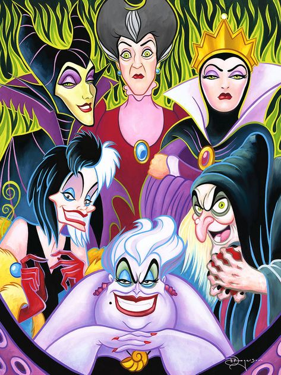
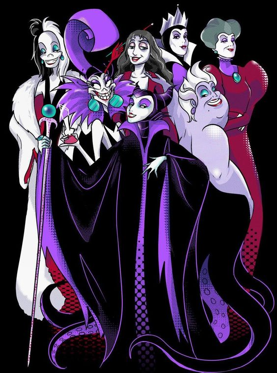

Han estado presentes en toda nuestra cultura popular, y seguiran presentes siempre, no importa cuantas veces un caballero o princesa los derrote, siempre estaran, pues bien se dice, no puede haber un cuento de hadas sin un villano que no le paresca.
Ellos son crueles, despiadados, inhumanos y malos, te voy a mostrar que es lo que hace a cada uno el mas malo de su cuento de hadas, pero sobre todo, quien es el villano mas malo de todos.

Sin duda alguna las que han tenido mas importancia son las mujeres, teniendo a Ursula en la Sirenita, Maléfica en La Bella Durmiente, La Reina Malvada en lBlanca Nieves, y por supuesto a Lady Tremain en el clásico de La Cenicienta. Algo curioso es que incluso las llegamos a amar y admirar mas que al "bueno" de la historia, sobre todo cuando nos adentramos mas en sus historias con diferentes Life Actión que el mismo Disney ha sacado en los ultimos años sobre sus clásico de disney, hasta ahora llevamos en el plano real a La cenicienta siendo la primera pélicula en dar pie a esta serie de peliculas, despues a Malefica donde se nos muestra otra cara de la moneda con la historia de la Bella durmiente, La bella y la Bestia no se podía quedar atras, recientemente Aladin, muy pronto el día 28 de Mayo de 2021 se estrenara Cruella, por la plataforma de streaming Disney Plus, siendo una historia de origen para Cruella de Vil. No importa su origen ni de donde vengan, nosotros las amamos auqnue tambien nos asusten, por eso querido lector es que estas aqui.